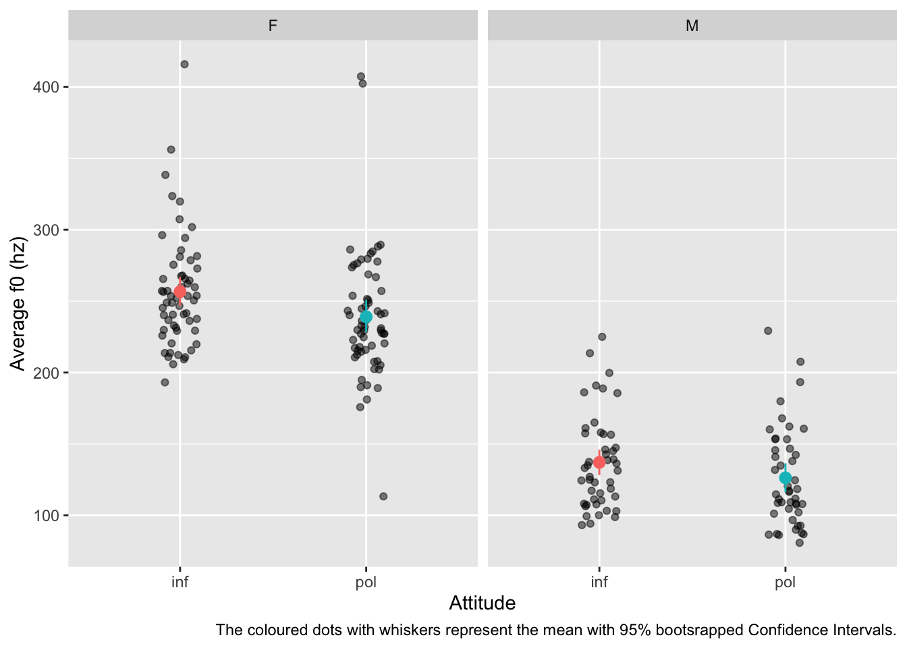

In this post, I will show you how you can report summary measures, describe plots and report regression models. I will illustrate this using one data table. You will practice this with different data I will provide the code of.
2 Reporting
Lets focus on the data from winter2012/polite.csv (details on the study and data here). (Remember to attach all the necessary packages!)
polite <-read_csv("data/winter2012/polite.csv")
Rows: 224 Columns: 27
── Column specification ────────────────────────────────────────────────────────
Delimiter: ","
chr (6): subject, gender, birthplace, musicstudent, task, attitude
dbl (21): months_ger, scenario, total_duration, articulation_rate, f0mn, f0s...
ℹ Use `spec()` to retrieve the full column specification for this data.
ℹ Specify the column types or set `show_col_types = FALSE` to quiet this message.
You would normally also provide information on the data itself, like number of participants, socio-demographic information, total number of observations and so on. I won’t illustrate that since it is self-explanatory. Check papers in your preferred area of linguistics to see what others do.
`summarise()` has grouped output by 'attitude'. You can override using the
`.groups` argument.
You can report them like so.
For female participants, the average f0 has a mean of 257 hz (SD = 40) in the informal condition and a mean of 239 hz (SD = 45) in the polite condition. There is a raw difference of 18 hz. For male participants, the average f0 has a mean of 137 hz (SD = 33) in the informal condition and 126 hz (SD = 34) in the polite condition, with a raw difference of 11 hz.
Remember to report a measure of central tendency and a measure of dispersion (a lot of researchers still just report measures of central tendency, but they are meaningless without an accompanying measure of dispersion, as you have now learnt).
Now let’s plot the data.
polite |>drop_na(f0mn) |>ggplot(aes(attitude, f0mn)) +geom_jitter(width =0.1, alpha =0.5) +stat_summary(fun.data ="mean_cl_boot", aes(colour = attitude)) +facet_grid(cols =vars(gender)) +labs(x ="Attitude", y ="Average f0 (hz)",caption ="The coloured dots with whiskers represent the mean with 95% bootsrapped Confidence Intervals." ) +theme(legend.position ="none")

Figure 1: Average f0 by attitude condition and gender
In the text you could write:
Figure 1 shows the average f0 by attitude (informal vs polite) and gender (female vs male). Each dot is the average f0 of a single participant. The plot also includes mean (coloured dots) with 95% bootstrapped Confidence Intervals. It can be observed that the average f0 of male speakers is generally lower than that of female speakers. Furthermore, there is a slight trend for f0 to be somewhat lower in the polite condition relative to the informal condition, in both genders (with females potentially showing a slightly larger difference than males). Finally, there seems to be more variability in average f0 within female than within male participants.
We fitted a Bayesian regression model to average f0, using a Gaussian distribution as the distribution family of the outcome. As predictors, we included attitude (informal vs polite) and gender (female vs male). Both predictors were coded using indexing by suppressing the intercept in the model with the 0+ syntax.
According to the model, the average f0 for female participants is between 247–267 hz when speaking informally vs 230–248 when speaking politely, at 80% confidence. In males, the average f0 is between 126–149 hz in informal speech vs 115–138 hz in polite speech, at 80% probability. The difference in f0 between polite and informal speech is between -27 and -9 hz in females and between -21 and -0.5 hz in males; in other words, f0 is 9–27 hz lower in females and 0.5–21 hz lower in males when the speech is polite relative to informal speech, at 80% confidence.
You could also calculate and report the “difference of differences” (i.e. the difference between the informal/polite difference of females and the informal/polite difference of males). You can achieve that using the same function, avg_comparisions() (check the function’s documentation).
3 Practice
Now, look at the following code (feel free to try it out) and write a report of the results (summary measures, plots and regression model). If you have any questions, ask the tutors for help (we are not expecting that you know exactly what is going on with the code, that’s part of the challenge, so if you are confused, just ask!). We won’t release a solution, so either ask us or post your report on Piazza for feedback.
Rows: 6500 Columns: 11
── Column specification ────────────────────────────────────────────────────────
Delimiter: ","
chr (8): Group, ID, List, Target, Critical_Filler, Word_Nonword, Relation_ty...
dbl (3): ACC, RT, logRT
ℹ Use `spec()` to retrieve the full column specification for this data.
ℹ Specify the column types or set `show_col_types = FALSE` to quiet this message.
correct_prop <- shallow |>group_by(ID, Group, Relation_type) |>summarise(correct_prop =sum(ACC) /n(),# The following drops the grouping created by group_by() which we don't# need anymore..groups ="drop" )ggplot() +# Proportion of each participantgeom_jitter(data = correct_prop,aes(x = Relation_type, y = correct_prop),width =0.1, alpha =0.5, height =0 ) +# Mean proportion by accuracy with confidence intervalstat_summary(data = shallow,aes(x = Relation_type, y = ACC, colour = Relation_type),fun.data ="mean_cl_boot", size =1 ) +labs(title ="Proportion of correct responses by participant, relation type and group",caption ="Mean proportion is represented by coloured points with 95% bootstrapped Confidence Intervals.",x ="Relation type",y ="Proportion" ) +facet_grid(cols =vars(Group)) +ylim(0, 1) +geom_hline(yintercept =0.5, linetype ="dashed") +theme(legend.position ="none")